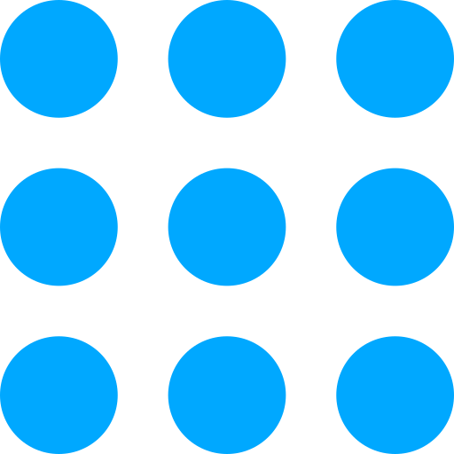

<ion-navbar padding hideBackButton="_hideButton">
  <ion-row >
    <ion-col *ngIf="_hideButton" col-2 (click)="enableMenu()" color="blue-light">
      <!-- <ion-icon name="menu" color="light"></ion-icon> -->
      
    </ion-col> 
    <ion-col col-10 align-self-center>
      <p class="h1 ml-5 blue">{{_title}}</p>
    </ion-col>
  </ion-row>
</ion-navbar>